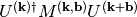

cmspy.w90 package¶
Submodules¶
cmspy.w90.amn module¶
-
cmspy.w90.amn.expand(a, kpoints, idx, Rvectors, nproj_atom=None)¶ Expand the projections matrix by translations of the orbitals
Parameters: a : ndarray, shape (nkpts, nbnds, nproj)
kpoints : ndarray, shape (nkpts, 3)
idx : ndarray
indices of translated orbitals
Rvectors: ndarray
translations of the orbitals
nproj_atom: ndarray, optional
number of projections on each atom, with idx and Rvectors now describing atoms instead of orbitals
cmspy.w90.ct module¶
cmspy.w90.eig module¶
-
cmspy.w90.eig.hamiltonian_xyz(Hmn_W_R, kpoints, Rvectors, Rweights)¶ Parameters: Hmn_W_R: ndarray
Hamiltonian in the Wannier representation
kpoints: ndarray, shape (nkpts, 3)
Rvectors: ndarray, shape (nrpts, 3)
Rweights: ndarray, shape (nrpts,)
cmspy.w90.mmn module¶
-
cmspy.w90.mmn.calc_wannier_centers_1D(m, mp_grid, kpb, bvectors)¶
-
cmspy.w90.mmn.calc_wannier_centers_1D_1(m)¶
-
cmspy.w90.mmn.change_gauge(mmn, umn, kpb_kidx, inside_window=None)¶ Change of the gauge of the overlaps matrix according to 
-
cmspy.w90.mmn.change_gauge_k(m, u, setup_file)¶
-
cmspy.w90.mmn.change_gauge_kpb(m, u, setup_file, kpb_kidx=None)¶
-
cmspy.w90.mmn.compute_omega(Mmn, bvectors, bweights)¶ Compute the spread functional
Parameters: Mmn: ndarray, shape (nkpts, nntot, nbnds, nbnds)
the overlap matrix
bvectors: ndarray, shape (nkpts, nntot, 3)
bweights: ndarray, shape (nntot,)
-
cmspy.w90.mmn.compute_omega_d(m, bvectors, bweights, idx=None)¶ Compute the diagonal contribution to the spread functional
Parameters: m: ndarray, shape (nkpts, nntot, nbnds, nbnds)
the overlap matrix
bvectors: ndarray, shape (nkpts, nntot, 3)
bweights: ndarray, shape (nntot,)
-
cmspy.w90.mmn.compute_omega_d_od(Mmn, bvectors, bweights)¶ Compute the spread functional
Parameters: Mmn: ndarray, shape (nkpts, nntot, nbnds, nbnds)
the overlap matrix
bvectors: ndarray, shape (nkpts, nntot, 3)
bweights: ndarray, shape (nntot,)
-
cmspy.w90.mmn.compute_omega_i(Mmn, bweights)¶ Compute the invariant and off-diagonal contribution to the spread functional
Parameters: Mmn: ndarray, shape (nkpts, nntot, nbnds, nbnds)
the overlap matrix
bweights: ndarray, shape (nntot,)
-
cmspy.w90.mmn.compute_omega_i_od(m, bweights, idx=None)¶ Compute the sum of the invariant and off-diagonal contribution to the spread functional
Parameters: m: ndarray, shape (nkpts, nntot, nbnds, nbnds)
the overlap matrix
bweights: ndarray, shape (nntot,)
-
cmspy.w90.mmn.compute_omega_od(Mmn, bweights)¶ Compute the off-diagonal contribution to the spread functional
Parameters: Mmn: ndarray, shape (nkpts, nntot, nbnds, nbnds)
the overlap matrix
bweights: ndarray, shape (nntot,)
-
cmspy.w90.mmn.project_overlaps(m, a, kpb_kidx, return_Uproj=False)¶
-
cmspy.w90.mmn.wannier_centers(m, bvectors, bweights)¶
cmspy.w90.orbitals module¶
Predefined trial orbitals
cmspy.w90.setup module¶
cmspy.w90.utils module¶
-
cmspy.w90.utils.bloch2wannier(Omn_H_k, kpoints, Rvectors, Rweights, Umn)¶ Change gauge from the Hamiltonian gauge to the Wannier gauge
Parameters: Omn_H_k: ndarray, shape (nkpts, nwann, nwann)
Operator matrix elements, Hamiltonian gauge, Bloch representation
Umn: ndarray, shape (nkpts, nwann, nwann)
Hamiltonian gauge to Wannier gauge transformation matrix
Returns: Omn_W_R: ndarray, shape (nrvec, nwann, nwann)
Operator matrix elements, Wannier gauge, Wannier representation
-
cmspy.w90.utils.change_gauge(X, Umn)¶
-
cmspy.w90.utils.wannier2bloch(Omn_W_R, kpoints, Rvectors, Rweights)¶ Change gauge from the Hamiltonian gauge to the Wannier gauge
Parameters: Omn_W_R : ndarray, shape (nrvec, nwann, nwann)
Operator matrix elements, Wannier gauge, Wannier representation
kpoints : ndarray, shape (nkpts, 3)
k-points (crystal coordinates) at which operator matrix elements are interpolated
Rvectors : ndarray, shape (nrvec, 3)
R-vectors (crystal coordinates) of Wannier representation
Rweights : ndarray, shape (nrvec,)
Returns: Omn_W_k: ndarray, shape (nkpts, nwann, nwann)
Operator matrix elements, Wannier gauge, Bloch representation
cmspy.w90.vme module¶
-
cmspy.w90.vme.Amn2vme(Amn_W_k, Hmn_alpha_W_k, Hmn_W_k)¶
-
cmspy.w90.vme.construct_Amn_xyz(Mmn_W, bvectors, bweights)¶ Construct the Amn matrix in the Wannier gauge
Mmn_W overlap matrix in the Wannier gauge